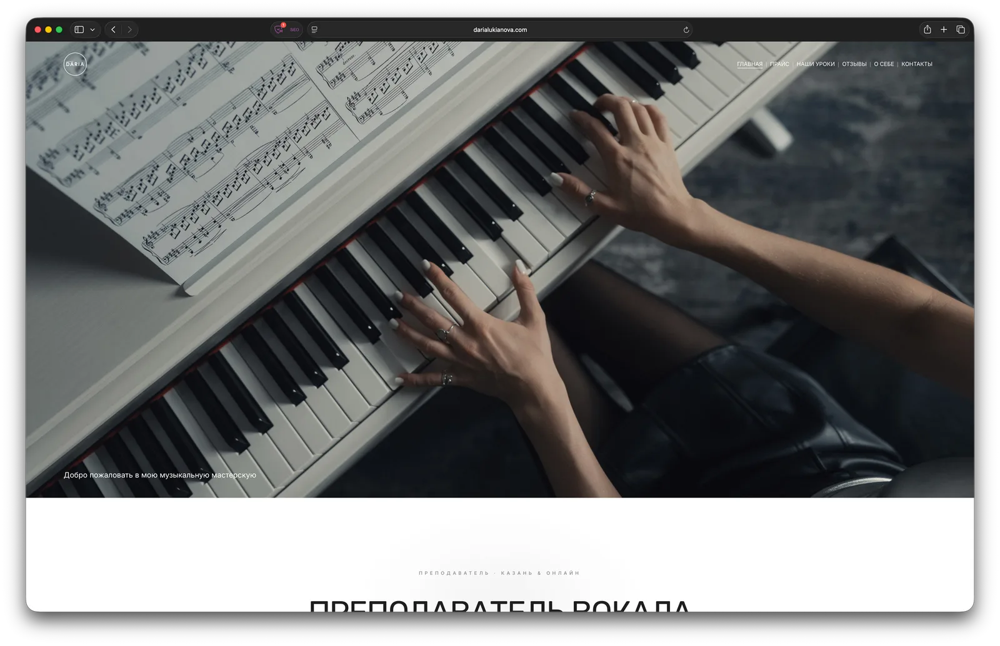

Кейс · частная практика
Вокал
и фортепиано.
Дарья Лукьянова преподаёт вокал и фортепиано в Казани. До сайта каждому новому ученику приходилось пересылать одно и то же: адрес коворкинга, актуальный прайс, записи занятий. Собрали всё в одно место — плюс сняли фотосессию под этот сайт.
- Клиент
- Дарья Лукьянова, Казань
- Задача
- Собрать всё в одном месте
- Работы
- Сайт и фотосессия под ключ
- Срок
- Две недели

Что было нужно
У частного преподавателя вся работа держится на переписке. Написал новый ученик — и каждый раз заново: где находится коворкинг, сколько стоит занятие сейчас, а не полгода назад, как вообще проходят уроки.
Дарья хотела перестать повторяться. Задача звучала как «собрать всё в кучу» — чтобы вместо десяти сообщений отправлять одну ссылку.
Второе, не менее важное: презентабельный вид. Педагог с такой подготовкой не должен выглядеть как объявление на доске. Нужен был сайт простой и лёгкий, но такой, который держит уровень.
Чем убеждать
Родитель выбирает не услугу, а человека, которому доверит ребёнка. Значит, сайт должен отвечать на вопрос «кто вы такая» раньше, чем на вопрос «сколько стоит».
Поэтому в структуре появился отдельный раздел с биографией — не формальное резюме, а профессиональный путь: где училась, с кем работает, чем занимается сейчас. Музыка у Дарьи в семье не первое поколение (её дед — хоровой дирижёр Владислав Георгиевич Лукьянов), но на сайте речь только о ней самой — так она захотела, и это правильно.
Рядом — видеозаписи занятий с учениками. Самое честное доказательство для этой профессии: слышно результат, видно подход. Ни один текст так не убеждает, как запись урока.
Как собирали
Сайт собран на WFOLIO — это моя рабочая платформа для клиентских проектов. Возможности сопоставимы с Tilda, а цены заметно приятнее, и для большинства задач этого более чем достаточно.
Здесь она подошла особенно хорошо: WFOLIO заточена под фотографов и видеографов, а у Дарьи ядро сайта — видео и фотографии. Готовых шаблонов под преподавателя там нет, поэтому часть страниц доведена вручную кодом: структура, вёрстка отдельных блоков, оформление под задачу.
Такой подход и определяет выбор платформы под каждый проект: типовая задача собирается быстро и недорого, а всё, что шаблон не умеет, дописывается руками. Для более требовательных задач берём другие решения.
- Главная страница с понятным первым экраном
- Актуальный прайс — больше не нужно диктовать цены в переписке
- Адрес коворкинга, где проходят занятия
- Биография и профессиональный путь
- Видеозаписи занятий с учениками
- Контакты для записи на урок
- Свой домен и настройка индексации в Яндексе и Google
Своя система онлайн-записи
Сайт убрал повторы в переписке, но запись всё равно шла вручную: «а когда у вас свободно?» — и снова десяток сообщений. Поэтому следующим шагом я сделал Дарье собственную систему записи.
Ученик сам выбирает на сайте пробное занятие, разовый урок или абонемент, видит только реально свободное время и оставляет заявку. Дарья получает уведомление в Telegram и подтверждает её в своём приложении на телефоне — это PWA, оно ставится с сайта без App Store.
- Дарья открывает «окна» на дату или сразу на несколько недель вперёд, а ученик выбирает время внутри окна под длительность своего занятия — 50 минут, 1 ч 15 или 1 ч 40
- Свободное время считается само: открытые окна минус уже занятые записи
- Защита от двойной записи: выбранное время удерживается, пока Дарья не ответит
- Заявки со статусами «ждёт ответа», «подтверждено», «отменено» и календарь с цветными отметками
- Связь с учеником в одно касание: звонок, iMessage, Telegram или WhatsApp

Бот в соцсетях для учеников
Дарья ведёт соцсети и делится материалами: нотами, распевками. Раньше на каждый комментарий «пришлите ноты» приходилось отвечать вручную.
Теперь это делает бот: человек пишет под постом ключевое слово — и сразу получает материал в личные сообщения, а под комментарием появляется публичный ответ, каждый раз в новой формулировке. Ключевые слова и тексты Дарья настраивает сама во вкладке «Соцсети» той же админки, там же видно, сколько раз сработало каждое слово.
Бот сделан отдельным сервисом: свой адрес, свои таблицы, свой деплой. Даже если с ним что-то случится, запись на занятия это никак не затронет. Доступ к соцсети продлевается автоматически.

Фотосессия тем же человеком
Обычная беда сайтов частных специалистов — фотографии. Либо снятые на телефон, либо стоковые, либо архивные не пойми откуда. Никакая вёрстка это не спасает: сайт сразу выглядит дешевле, чем услуга, которую продаёт.
Здесь этой проблемы не было: мы отдельно провели фотосессию специально под сайт. Все кадры снял я сам — фотография моя вторая профессия, портфолио на avanzato.ru.
Дарья получила и сайт, и съёмку от одного человека. Это не только удобнее по срокам: когда снимаешь кадры, уже зная, в какой блок они встанут, не приходится потом подгонять вёрстку под неудачный ракурс.
Что получилось
Вместо пересылки одного и того же — одна ссылка. Прайс актуальный, адрес на месте, записи занятий доступны любому, кто сомневается.
Но главный результат другой: ученики приходят из поиска. Люди находят Дарью в Яндексе и Google — и говорят об этом при первом контакте, сами. Для частной практики, которая раньше жила только на сарафанном радио, это новый канал.
По запросу «преподаватель по фортепиано в Казани» — 14-я строка Google на июль 2026. Честно: это вторая страница выдачи, а не первая. Но это позиция частного педагога среди музыкальных школ и агрегаторов с бюджетами на рекламу — при нулевых вложениях в продвижение.
И сайт, и фотоконтент сделаны одним человеком — для клиента это один разговор и один срок вместо двух подрядчиков.
Открыть darialukianova.comСледующий проект — ваш
Нужен сайт под задачу?
Расскажите об идее — обсудим структуру, формат и сроки за пару сообщений.